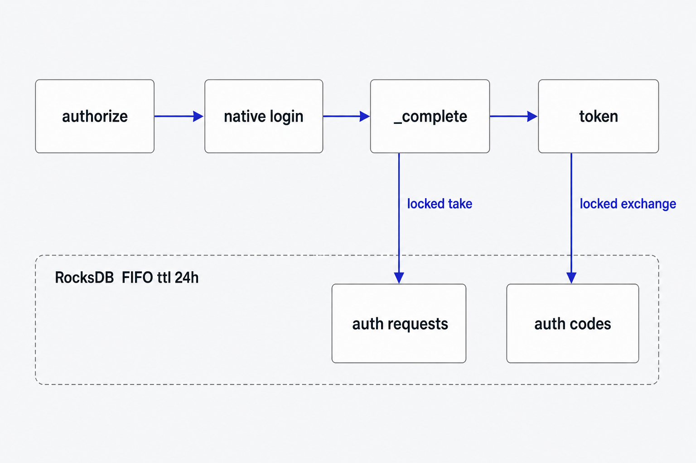
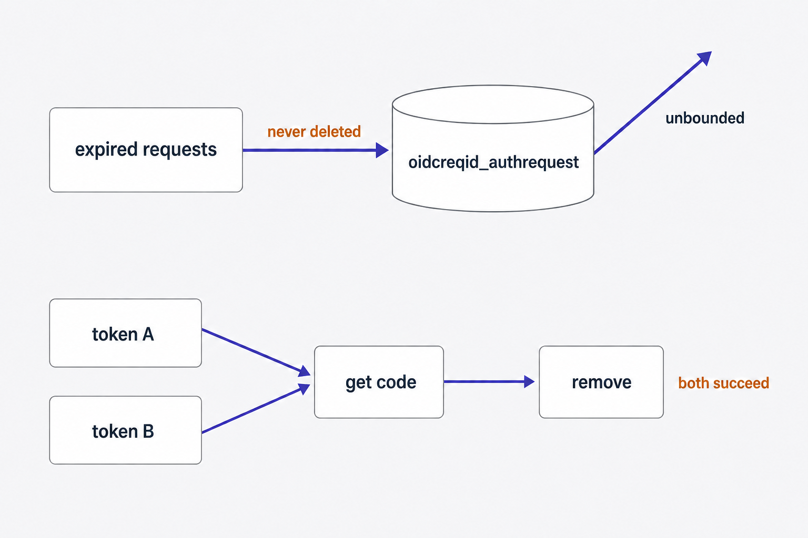
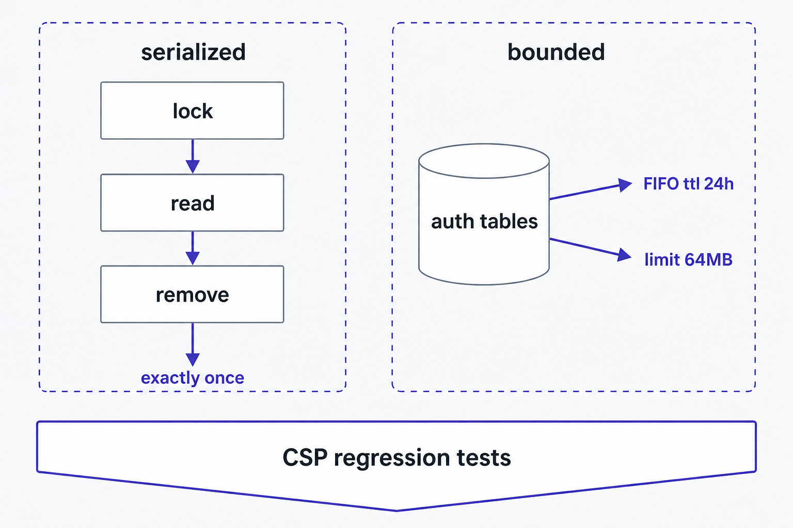

Plan: OIDC security-review hardening — bounded storage, single-use codes, CSP regressions

Purpose
Close every Important finding from the 2026-09-01 security review of the OIDC native-login CSP series (4fc8dd90..e6e4a5da), plus the cheap hardening minors that live in the same files. Acceptance bar: exactly 1 of 32 concurrent exchange_auth_code contenders succeeds; an expired authorization request is deleted by its own failed take (a later peek reports unknown, not expired); both OIDC ephemeral tables carry a 24 h FIFO TTL and a 64 MB size cap; the widened CSP on the failed-submit re-render and the html_layer handler-wins precedence are each pinned by a test; all suites stay green (31+ unit tests in tuwunel_api oidc, 1 integration test in native_auth, plus the new router tests). Out of scope: rendering the requesting client's identity on the sign-in page (a consent-UX design change deserving its own plan), rate limits on the GET browser routes, and any change to token or grant semantics beyond serializing consumption.
Problem
The CSP form-action fix series shipped correct and live-verified, but the review found the same defect classes it fixed still open one layer away, and the fixed behavior unprotected against regression. Four problems, in descending severity: (1) oidcreqid_authrequest rows are never deleted — the new take_auth_request propagates peek's expiry error before its remove, abandoned requests (the common case: user closes the tab) are never touched again, and the table's RANDOM_SMALL descriptor gets only the inherited 21-day set_ttl, which under universal compaction merely schedules old files for compaction and deletes nothing. /authorize is unauthenticated and its oidc_rc_* throttle is a no-op unless configured, so the table is attacker-growable without bound. oidccode_authsession has the identical retention hole for abandoned codes. (2) exchange_auth_code still does get → remove with no per-code lock: two concurrent POST /token with the same code can both redeem it and mint two sessions — the exact race this series closed for auth requests with auth_request_locks, and RFC 6749 §4.1.2 requires single-use codes. (3) The widened CSP on the failed-submit re-render (wrong password → form re-rendered) is load-bearing — without it the user's second, correct submit is CSP-blocked in Chromium, the precise UX the series exists to fix — and no test asserts it. (4) The design leans on html_layer()'s .entry().or_insert() letting the handler's CSP win, but the integration harness builds tuwunel_api::router::build without the router layer stack, so a "tidy" to .insert() would silently revert every OIDC page to the strict policy with no failing test — the exact regression class (header cleanup, 9bace37e) that caused the original incident.
src/service/oauth/server/auth.rs:123-130 — take_auth_request holds auth_request_locks but peek…? at line 125 returns before the remove at line 127 when the row is expired.
src/database/maps.rs:214-217 — oidcreqid_authrequest uses bare RANDOM_SMALL; maps.rs:192-195 — oidccode_authsession likewise; the device-grant tables at maps.rs:200-209 use RANDOM_SMALL_CACHE + ttl: 60*60*24.
src/database/engine/descriptor.rs:90 — BASE ttl is 21 days, applied via opts.set_ttl (cf_opts.rs:43): compaction scheduling only for non-FIFO styles; only the FIFO _CACHE templates actually drop aged files.
src/service/oauth/server/auth.rs:141-150 — exchange_auth_code get→remove, no lock; server.rs:37-41 — device_locks / auth_request_locks precedent fields.
src/api/oidc/native.rs:198-206 — failed-submit re-render passes form_action through; asserted nowhere.
src/router/layers.rs:264-270 — .entry().or_insert() precedence; src/main/tests/native_auth.rs:448-463 — harness composes only the API router, so the layer never runs in that suite.

get and remove.Solution
Apply the codebase's own proven patterns rather than inventing new machinery. Retention: switch both ephemeral OIDC tables to RANDOM_SMALL_CACHE with ttl: 60*60*24 — FIFO compaction genuinely deletes aged files, and limit_size: 64 MB (inherited from the template) turns the attacker-growable table into a bounded ring; the in-place universal→FIFO conversion of an existing column family shipped before in this repo (92bef7a3 converted mediaid_lazy). Complement the coarse file-level TTL with a precise purge: take_auth_request removes the row even when peek fails, so an expired request dies at its own consumption attempt. Single-use codes: add auth_code_locks: MutexMap<String, ()> to Server and lock the code at the top of exchange_auth_code — a line-for-line application of the series' own auth_request_locks pattern; MutexMap auto-removes entries on guard drop, so attacker-chosen code keys cannot accumulate. Regression tests: assert the exact widened CSP header on a wrong-password re-render inside the existing cross-origin integration flow (the always-on brute-force floor allows a 60-token burst, so one extra failed POST is safe), and pin html_layer's handler-wins precedence with unit tests in the existing src/router/layers/tests.rs, driven by the router crate's existing Tokio test runtime (no new dev-deps). Polish: flip form_action_source from denylist to allowlist (http/https origins plus dotted reverse-DNS schemes, mirroring DCR's classification), build the widened CSP from the TUWUNEL_CSP parts instead of a silent string-replace, show the "link expired" page only for actual NotFound peek failures, and document the deliberate divergence between the two origin extractors.

Relevant Files
Existing Files
- existing
src/database/maps.rs— column-family schema;oidccode_authsessionat 192-195 andoidcreqid_authrequestat 214-217 move toRANDOM_SMALL_CACHE+ 24 h ttl (device-grant precedent at 200-209). - existing
src/service/oauth/server.rs—Serverstruct; addauth_code_locksbesidedevice_locks/auth_request_locks(37-41) and init inbuild(79-80). - existing
src/service/oauth/server/auth.rs—take_auth_request(123-130) gains the unconditional purge;exchange_auth_code(133-150) gains the per-code lock.AUTH_REQUEST_LIFETIME/AUTH_CODE_LIFETIMEare both 10 min (66-67), far under the 24 h ttl. - existing
src/api/oidc/native.rs—form_action_source(73-82) flips to allowlist;expired_authorization_response(211-217) gains theNotFoundgate; unit tests in the same file extend. - existing
src/api/oidc/account.rs—account_html_response_with_form_action(382-409) builds the policy fromTUWUNEL_CSPparts;redirect_origin(430-442) gets the divergence doc comment. - existing
src/api/oidc/account/tests.rs— existing exact-header CSP tests keep the new construction honest; extend for allowlist cases. - existing
src/router/layers.rs+src/router/layers/tests.rs—html_layer(251-275) precedence pinned by new unit tests beside the existing layer-branch tests. - existing
src/main/tests/native_auth.rs— integration suite; extendassert_auth_request_storage(246-294), cloneassert_concurrent_auth_request_take(110-153) for code exchange, extendassert_cross_origin_authorization_flow(155-225) with the failed-submit CSP assertion. - existing
src/core/utils/html.rs—TUWUNEL_CSPparts array (7-16); read-only, the new policy construction consumes it. - existing
plans/oidc-native-login-csp-form-action.html— parent plan; receives an amendment correcting its phase-2/3 testing checklist commands and a forward ref to this plan.
New Files
- new
plans/oidc-security-hardening-followups/— generated diagram images for this plan; no new source files, every code change lands in an existing module.
Implementation Phases
IMPORTANT: Execute every phase and task step by step, in order, top to bottom.
Status markers: [] idle · [wip] in progress · [x] complete · [f] failed. All start as []; the executing workflow updates them as it works.
[x] Phase 1: Bounded retention for the OIDC ephemeral tables
Give oidcreqid_authrequest and oidccode_authsession the same FIFO-cache retention the device-grant tables already have, and make a failed take purge its own expired row. Closes review finding Important 1.
1. Switch both descriptors to the FIFO cache template
[x]Insrc/database/maps.rs, changeoidccode_authsession(192-195) andoidcreqid_authrequest(214-217) to the CACHE template with an explanatory ttl comment, following themediaid_lazystyle from92bef7a3:
Descriptor {
name: "oidccode_authsession",
ttl: 60 * 60 * 24, // dead after AUTH_CODE_LIFETIME (10m); FIFO reclaim is file-granular
..descriptor::RANDOM_SMALL_CACHE
},
…
Descriptor {
name: "oidcreqid_authrequest",
ttl: 60 * 60 * 24, // dead after AUTH_REQUEST_LIFETIME (10m); FIFO reclaim is file-granular
..descriptor::RANDOM_SMALL_CACHE
},[x]Do not tighten ttl below 24 h: FIFO TTL is file-granularity, the 64 MBlimit_sizealready bounds abuse, and matching the device-grant tables keeps one convention. Both application lifetimes (10 min) enforce actual expiry; the descriptor only reclaims storage.
2. Purge the expired row inside take_auth_request
[x]Insrc/service/oauth/server/auth.rs, stop propagatingpeek's error around theremove— bind the result, remove unconditionally under the held lock, then return it:
pub async fn take_auth_request(&self, req_id: &str) -> Result<AuthRequest> {
let _request_lock = self.auth_request_locks.lock(req_id).await;
let request = self.peek_auth_request(req_id).await;
// Purge unconditionally: an expired row can never be redeemed, and the
// FIFO ttl only reclaims it at file granularity, so it dies at its own
// consumption attempt. Removing an absent key is a no-op.
self.db.oidcreqid_authrequest.remove(req_id);
request
}3. Testing Strategy
Service-level assertions in the existing integration test distinguish deleted from still present through the two distinct peek error messages: "Unknown or expired authorization request" (row absent) vs "Authorization request has expired" (row present, expired). Extend assert_auth_request_storage in src/main/tests/native_auth.rs directly after its existing expired-peek block (277-291): call take_auth_request("native-expired-test"), require it to fail, then require a follow-up peek to report the unknown message — proving the take deleted the row. The descriptor change itself is exercised by the whole suite running against a real RocksDB: the column family opens under the new FIFO options in a fresh database.
[x]cargo test -p tuwunel --test native_auth— fresh DB opens with the FIFO descriptors; expired take purges its row; all pre-existing storage semantics hold.[x]cargo test -p tuwunel_api oidc— no API-layer behavior drift.
[x] Phase 2: Serialize authorization-code exchange
Make authorization codes single-use under concurrency (RFC 6749 §4.1.2, OAuth Security BCP) by applying the series' own MutexMap pattern to exchange_auth_code. Closes review finding Important 2.
1. Add the per-code lock map to Server
[x]Insrc/service/oauth/server.rs, add the field besideauth_request_locks(41) with a doc comment in the house style, and init it inbuildbeside the others (79-80):
/// Serializes the read-check-consume of an authorization code so concurrent
/// token requests cannot each redeem the same single-use code (RFC 6749
/// §4.1.2).
auth_code_locks: MutexMap<String, ()>,
…
auth_code_locks: MutexMap::new(),2. Lock the code for the whole read-check-consume
[x]Insrc/service/oauth/server/auth.rs, take the guard as the first statement ofexchange_auth_code, before theget; keep the existing remove-before-expiry-check ordering (an expired code is still purged by its redemption attempt):
pub async fn exchange_auth_code(&self, code: &str, …) -> Result<AuthCodeSession> {
let _code_lock = self.auth_code_locks.lock(code).await;
let session: AuthCodeSession = self.db.oidccode_authsession.get(code).await…3. Testing Strategy
Clone the proven 32-contender barrier pattern from assert_concurrent_auth_request_take (native_auth.rs:110-153) as a new assert_concurrent_auth_code_exchange, wired into native_round_trip after the existing concurrency check. Widen the race window the same way: build the code from an AuthRequest whose redirect_uri carries a 4 MB payload (the session clones that field), so every contender observes the value before any remove lands. Contenders call exchange_auth_code(&code, "native-test-client", &large_redirect_uri, None, false) — client and redirect must match the session, and test_auth_request carries no PKCE challenge, so require_pkce: false takes the challenge-less Ok path. Require exactly 1 success. Before the fix this test fails with multiple winners; after, it must be stable across repeated runs.
[x]cargo test -p tuwunel --test native_auth— exactly one of 32 concurrent exchanges succeeds; full flow still green.[x]Re-run the suite at least twice more — the race assertion must not flake.
[x] Phase 3: CSP regression tests at both layers
Fence the two untested load-bearing behaviors: the widened CSP on the failed-submit re-render, and html_layer's handler-wins header precedence. No production code changes in this phase — if either new test fails, that is a real defect to fix before proceeding. Closes review findings Important 3 and Important 4.
1. Assert the widened CSP on the wrong-password re-render
[x]Inassert_cross_origin_authorization_flow(native_auth.rs:155-225), between the GET-page CSP assertion and the correct-credentials POST, submit the same form with a wrong password and assert: statusFORBIDDEN; the exact widened CSP header (same byte-for-byte string the GET assertion uses, endingform-action 'self' https://element-cross-origin.example;base-uri 'none'); the body containsInvalid username or passwordand still contains<form. The always-on device rate limiter allows a 60-token burst per IP (DEVICE_RC_BURST,src/service/oauth/mod.rs:91), so the extra POST cannot trip it.[x]Let the flow proceed to the existing correct-password POST unchanged — its success doubles as the retry-preservation proof: the failed submit did not consume the authorization request.
2. Pin html_layer precedence in the router crate
[x]Insrc/router/layers/tests.rs, add three#[tokio::test]tests beside the existing layer-branch tests, driving the layered service withtower::ServiceExt::oneshotover atower::service_fnhandler (tokio,tower, andhttpare already router dependencies — add no dev-deps):[x]handler CSP wins: atext/htmlresponse that already carriesContent-Security-Policy: form-action 'self' https://client.examplepasses through with that exact value preserved andX-Frame-Options: DENYinserted.[x]default applied: atext/htmlresponse with no CSP gets exactlyTUWUNEL_CSP_VALUE.[x]non-HTML untouched: anapplication/jsonresponse gets neither header.
#[tokio::test]
async fn html_layer_preserves_handler_csp() {
let svc = super::html_layer().layer(tower::service_fn(async |_req: http::Request<()>| {
Ok::<_, std::convert::Infallible>(
http::Response::builder()
.header(header::CONTENT_TYPE, "text/html")
.header(header::CONTENT_SECURITY_POLICY, "form-action 'self' https://client.example")
.body(())
.expect("static test response must build"),
)
}));
let response = svc.oneshot(http::Request::new(())).await
.expect("infallible service");
assert_eq!(
response.headers()[header::CONTENT_SECURITY_POLICY],
"form-action 'self' https://client.example"
);
assert_eq!(response.headers()[header::X_FRAME_OPTIONS], "DENY");
}3. Testing Strategy
These are the tests; the strategy is proving they bite. For the layer tests, temporarily flip .or_insert to .insert-equivalent locally (or comment the entry guard) and watch the handler-CSP test fail, then restore. For the re-render test, temporarily drop the form_action argument at native.rs:206 and watch the new assertion fail, then restore. Record in the commit message that both mutations were verified to fail.
[x]cargo test -p tuwunel_router— three new layer tests pass; existing branch tests unaffected.[x]cargo test -p tuwunel --test native_auth— extended cross-origin flow passes with the failed-submit assertion.[x]Both mutation checks performed and reverted — each new test demonstrated to fail against the regression it guards.
[] Phase 4: Hardening polish in the touched modules
The review's cheap minors that materially harden or de-fragilize the same files: allowlist scheme classification, structural CSP construction, honest error copy, and the divergence documentation. Closes review minors 1-5.
1. Flip form_action_source to an allowlist
[]Insrc/api/oidc/native.rs:73-82, replace thejavascript/datadenylist with the DCR-mirroring classification — http/https origins, or dotted reverse-DNS private-use schemes (is_reverse_dnswith no base isscheme.contains('.'),registration.rs:218-221); everything else (blob:,file:,ftp:…) yieldsNoneand falls back to the strict policy:
let source = match url.scheme() {
| "http" | "https" => url.origin().ascii_serialization(),
// Mirror DCR's redirect classification (validate_redirect_uri): only
// dotted reverse-DNS private-use schemes qualify as a CSP source.
| scheme if scheme.contains('.') => format!("{scheme}:"),
| _ => return None,
};[]Extendform_action_accepts_safe_origins_and_rejects_header_injection(native.rs:687-700) withblob:andfile:///etc/passwd→None; keepio.element.android:→Some.
2. Build the widened policy from the TUWUNEL_CSP parts
[]Inaccount_html_response_with_form_action(account.rs:394-400), replace the silent string-replace with a map overTUWUNEL_CSPso a reworded or reordered policy can never silently drop the widening; keep theHeaderValue::try_fromfail-closed fallback (401-402) unchanged:
let policy = extra_source.map_or_else(
|| TUWUNEL_CSP_VALUE.to_owned(),
|source| {
TUWUNEL_CSP
.iter()
.map(|directive| match directive.strip_prefix("form-action") {
| Some(rest) => format!("form-action{rest} {source}"),
| None => (*directive).to_owned(),
})
.collect::<Vec<_>>()
.join(";")
},
);[]The existing exact-header tests (account/tests.rsauthorization_csp_only_widens_form_action, plus both integration CSP assertions) must pass byte-for-byte unchanged — they are the proof the construction is equivalent.
3. Gate the "link expired" copy on an actual NotFound
[]Inexpired_authorization_response(native.rs:211-217): both real peek failures areRequest(NotFound(…)), while a missing OIDC server surfaces asRequest(Unrecognized(…))(oauth/mod.rs:77-81). Render the expired page only for theNotFoundkind; delegate everything else toaccount_error_response(error), which already shows the sanitized message. Verify the exactError::Requestvariant shape againsttuwunel_core::Errorwhen implementing (the integration suite matches it asError::Request(_, message, _)).[]Add a unit test: aNotFounderror renders the expired page; anUnrecognizederror renders its sanitized message and not the "Sign-in link expired" heading.
4. Document the deliberate divergences
[]Doc comments onform_action_source(native.rs) andredirect_origin(account.rs:430-442) naming each other and stating why they differ: link target (http/https only — a clickable "Start over" must never be a custom scheme) vs CSP source (custom app schemes allowed — the form posts to a validated native callback).[]Doc comments onnative_get_route,native_submit_route(native.rs) andcomplete_route(complete.rs): browser navigation targets returnResponseand render every failure as HTML — never add aResult-returning route here, or errors regress to JSON (the parent plan's recorded loose thread).
5. Amend the parent plan
[]Append an amendment entry toplans/oidc-native-login-csp-form-action.htmlcorrecting its phase-2/3 testing checklists: the retry/storage behaviors are tested bycargo test -p tuwunel --test native_auth(insrc/main/tests/native_auth.rs), not-p tuwunel_api complete/-p tuwunel_service oauth. Append this plan to itsforward refsmetadata list (append-only; keep existing entries).
6. Testing Strategy
Unit tests in the touched crates carry this phase; the byte-for-byte CSP assertions at both the unit and integration layers prove the parts-based construction changed nothing observable. Run the full trio to catch cross-crate drift.
[]cargo test -p tuwunel_api oidc— allowlist, policy-construction, and error-copy tests pass; every pre-existing CSP byte-string unchanged.[]cargo test -p tuwunel --test native_auth— integration CSP assertions still byte-identical.[]cargo test -p tuwunel_router— layer tests still green.
[] Phase 5: Deploy and verify live
The FIFO conversion of two existing column families is the one change with a runtime risk profile beyond the test suite: the live database reopens its existing CFs under new compaction options. The in-place precedent (mediaid_lazy, 92bef7a3) shipped cleanly, and the worst-case rollback is trivial — revert the descriptor; the rows are 10-minute ephemera, losing them logs users out of nothing. Verify on the production deployment (tuwunel on the OCI k8s cluster via the oci-flux GitOps repo, kubectl --context OCI).
1. Ship and watch startup
[]Merge tomainand let fork CI publish the OCI image; roll it out through the oci-flux repo as usual.[]Watch pod logs across the restart (kubectl --context OCI logs -f …): the database must open every column family cleanly — noInvalid argumentor FIFO/compaction errors namingoidcreqid_authrequestoroidccode_authsession.
2. Testing Strategy
A live end-to-end native login is the acceptance test: it exercises authorize → native page → submit → _complete → token exchange across the converted tables and the serialized exchange path. Perform it from a real client (Element) against the production homeserver, wrong password first, then correct — mirroring the integration flow.
[]Live native login with one failed attempt then a successful retry completes end-to-end in a Chromium browser (the CSP-sensitive engine).[]Startup logs recorded clean; note the verification (date, image tag, log excerpt) in this plan's Amendments.
Validation Commands
Execute these commands to validate the entire plan is complete:
[]cargo test -p tuwunel_api oidc— all OIDC unit tests (31 pre-existing + this plan's additions) pass.[]cargo test -p tuwunel_router— layer-branch and newhtml_layerprecedence tests pass.[]cargo test -p tuwunel --test native_auth— full integration flow: FIFO descriptors, purged expired take, 1-of-32 exchange, failed-submit CSP, cross-origin completion.[]cargo clippy -p tuwunel_database -p tuwunel_service -p tuwunel_api -p tuwunel_router --all-targets— no new lints in the touched crates.[]cargo fmt --all -- --check— formatting clean (CI enforces via thefmtbake target).
| Check | Query / method | Acceptance bar |
|---|---|---|
| Live DB reopen under FIFO descriptors | kubectl --context OCI logs across the rollout restart | Every column family opens; zero errors naming either converted table |
| Live native login, failure-then-retry | Element against the production homeserver, Chromium | Wrong password re-renders the form (no CSP block), correct retry completes sign-in |
Notes
Provenance
This plan operationalizes the 2026-09-01 security-focused code review of the OIDC native-login CSP series (4fc8dd90..e6e4a5da): Important findings 1-4 map to Phases 1-3; review minors 1-5 map to Phase 4; the review's remaining items are deliberately deferred (below). The review's verdict on the shipped series was "ready / no revert" — nothing here is a fix to broken behavior, all of it is closing adjacent gaps the series exposed to scrutiny.
Why FIFO conversion is safe enough
92bef7a3 converted the existing, populated mediaid_lazy column family from RANDOM_SMALL to RANDOM_SMALL_CACHE in place and shipped in a release. The engine applies descriptor options on open (cf_opts.rs); no migration step exists or was needed. Residual risk is RocksDB rejecting FIFO over files previously compacted into lower levels — precisely what Phase 5's startup-log watch covers, and why rollback (revert the two descriptor lines) is recorded as trivially safe: the tables hold only 10-minute ephemera.
peek_auth_request. Peek is deliberately read-only — it runs on every GET of the login page and inside _complete's pre-check. Giving it a write side effect would blur the peek/take contract the parent series just established; the take-side purge plus FIFO TTL covers both the touched-when-expired and never-touched-again cases.
ttl to ~1 h. FIFO TTL deletes whole aged files, not rows, so a tight ttl buys little precision; 24 h matches the device-grant tables and keeps a single convention. The 64 MB limit_size is the actual abuse bound — at ~1 KB per request that is a ring of ~65 k in-flight rows, far beyond any legitimate concurrent login load.
FIFO early-eviction tradeoff
Under FIFO compaction, exceeding limit_size evicts oldest files even before ttl. For these tables that is the desired failure mode: under a request-spray attack the oldest (attacker's) rows die first, and a legitimate user evicted mid-login simply restarts the flow — the same UX as an expired request, on a page that already handles it.
Build-environment gotchas (from the review session, same machine)
The repo's default nix devshell produced host build-script binaries that segfault under a sandboxed harness; the dynamic devshell worked, with LD_LIBRARY_PATH pointing at the nix-provided rocksdb/jemalloc shared libraries. When running as an agent, use an isolated CARGO_TARGET_DIR rather than the repo's shared target/ — a sandboxed build that dies can leave poisoned build-script fingerprints a later developer build would reuse. The two test binaries take minutes to link cold; run them in the foreground with a generous timeout rather than backgrounding and losing the run.
Deliberately deferred (candidates for their own plans)
- Client identity on the sign-in page. With open dynamic client registration and no consent step, the login page never shows which client receives the code. Rendering
client_name+ redirect origin (MAS-style) is the standard phishing mitigation — but it is consent-UX design work with i18n and layout questions, not a mechanical hardening fix. Own plan. - Rate limits on
GET /nativeandGET /_complete. Unthrottled DB-read + render; low risk (no state mutation, no secrets), and the right shape may be a shared browser-route limiter rather than two more ad-hoc buckets. - Unifying the origin extractors. Phase 4 documents the
form_action_source/redirect_origindivergence; folding them into one policy-flagged helper is optional follow-up refactoring once both are fenced by tests.
Amendments
2026-09-01 — Phase 3 router test executor correction
The router crate's workspace futures dependency disables default features and does not enable the executor feature, so the planned futures::executor::block_on test driver does not compile. The crate already depends on Tokio with its test macro and runtime features enabled. The three layer tests therefore use #[tokio::test] and .await, preserving the planned behavior and adding no dependency.